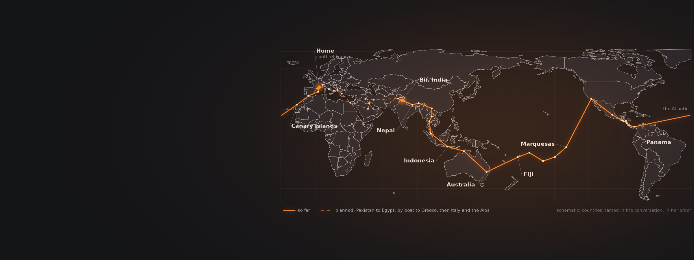
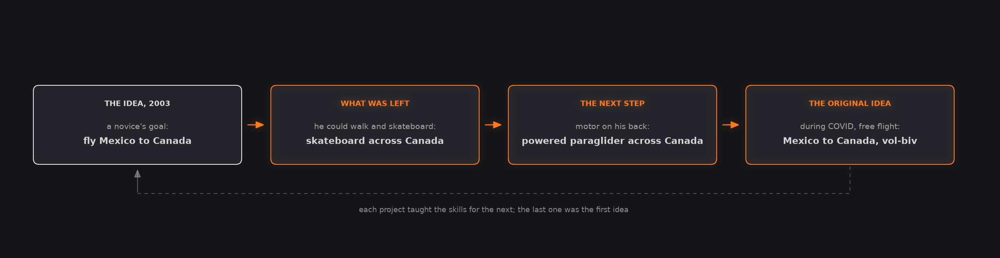
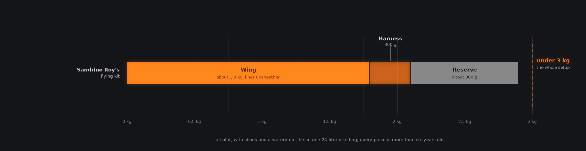
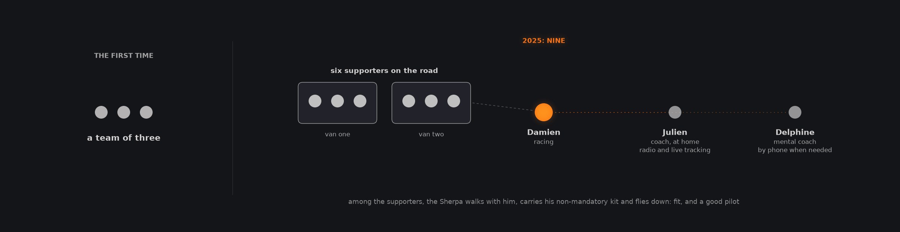
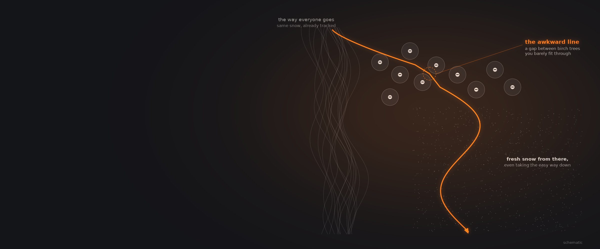

How Do Pilots Build a Life Around Paragliding?
Five pilots who organised their lives around flying: how the idea started, what it cost in money and time, how they travel and who they share it with, and the lows and the limits that come with the highs.
Five conversations: a filmmaker who flew from Mexico to Canada, a pilot cycling and sailing home to France the long way round, a father of two who finished second in the X-Alps, a tour operator, and a pilot who flies with his dog.
The six conversations
Open any tile for chapters, quotes and links
 Vol Biv & Freedom Unfiltered : A Human-Powered Odyssey By Paragliding, Biking & Sailing Around The GlobeSandrine Roy6 chapters
Episode 7050 min
Vol Biv & Freedom Unfiltered : A Human-Powered Odyssey By Paragliding, Biking & Sailing Around The GlobeSandrine Roy6 chapters
Episode 7050 min From Cuba to Socotra: Inside the World’s Most Unique Paragliding ToursChris Garcia11 chapters
Episode 12 min
From Cuba to Socotra: Inside the World’s Most Unique Paragliding ToursChris Garcia11 chapters
Episode 12 min Touch The Sky With GloryAninder SinghNo chapters yet
Episode 6949 min
Touch The Sky With GloryAninder SinghNo chapters yet
Episode 6949 min How to Fly With Your Dog | Explained by Shams10 chapters
Episode 2049 min
How to Fly With Your Dog | Explained by Shams10 chapters
Episode 2049 min Living The DreamBenjamin Jordan6 chapters
Living The DreamBenjamin Jordan6 chapters
Every big plan started as something smaller
Benjamin Jordan's first goal was too big, so he did what was left and let each project teach him the next. The others started with a flatmate's sailing lessons, a wing bought on eBay, and a tour that paid for another.
In 2003, as a complete novice who had not yet done a forward launch, Benjamin Jordan set himself a goal: fly a paraglider from Mexico to Canada. He soon realised that cross-country flying meant finding invisible thermals, which he could not yet do, and that a powered paraglider needed money and skill he did not have either. What was left was that he could walk and skateboard, so he skateboarded across Canada, and learned how to organise a long project, work with a team and raise funds. That led to a powered paraglider flight across Canada and eventually, during COVID, to flying from Mexico to Canada, which he says still stands as a free-flying vol-biv record. His method: boil the big idea down, cross out everything you cannot do, and focus on what is left.
Sandrine Roy's idea came about ten years before she set off; the first version, Greenland to Antarctica, was too big. A flatmate taught her to sail, a French pilot's book about a seven-year world tour with his glider inspired her, and she left fifteen days after finishing her PhD, with an alpine climbing background and little other preparation. Damien Lacaze found paragliding at 22, when he and his climbing friends got bored of walking down; he bought a wing on eBay, tried to teach himself, then went to a school. Instructor training required competitions, which he calls a revelation. Chris Garcia, whose father is from Cuba, had always wanted to run a paragliding tour there; his first tour, in Macedonia in July 2023, helped pay for the Cuba reconnaissance.

After Benjamin Jordan, Episode 20, chapter 2.
Buying the time to fly
Every guest pays for the dream in time more than money. Benjamin Jordan cut his living costs to almost nothing for ten years, Sandrine Roy saved for five years to stop working for three, and Damien Lacaze trains around a job and two daughters.
After his powered paraglider flight across Canada, Benjamin Jordan saw two options: stop doing what he loved so he could pay his overheads, or cut his overheads to match what he loved. He converted the school bus that had followed his record flight into a cabin warm enough for Canadian winters, and lived in it for about ten years, paying almost no rent and growing much of his own food. That freedom, he says, is how he built his career: he could leave for Malawi at two days' notice to teach someone to fly. Now, with children and bills he cannot cut, he shrinks the projects instead: if the key is fixed, adjust the lock. And whatever the project, give yourself far more time than it should take. Flying from Mexico to Canada he budgeted a month for each state, and Arizona took two.
Sandrine Roy saved for five years to be able to stop working for three, and worked again in Australia on the way; a journey she expected to last two or three years has lasted more than four. Damien Lacaze has a wife, two daughters and a job, and finds 10 to 12 hours a week to train, where some rivals put in 20 or 25. When he told his mental coach it was normal not to win because he trained half as much, she asked whether he really thought he deserved less than pilots for whom training was the job. Shams, who flies with his dog Ouka, turned the dog's unplanned fame online into brand collaborations, and now aims to work as little as possible so he can spend his time at home with their baby.
Far from home, under your own power
Sandrine Roy has crossed 27 countries by bicycle, boat and wing with a flying kit under three kilograms. Damien Lacaze races across the Alps on foot and by wing, and in Pakistan flew to nearly 8,000 metres.
Sandrine Roy is cycling home to France the long way, sailing across oceans and flying where she can, using as little fuel as possible; the point, she says, is feeling the land in your legs and seeing how big the world is under your own power. She has flown about 100 sites, probably under 50 hours a year, in flights from two minutes to two and a half hours, and often lands near a village where nobody knows paragliding, which breaks the ice. At a new site she sits for 15 to 20 minutes, watching and working out the airflow before deciding. She admits that after a month on the bike without flying she sometimes pushes beyond her capacity, but says she is not a big risk taker. Her best flights include one near Fuego in eruption, keeping her distance, and the Langtang Valley in Nepal, at about 5,000 metres among 7,000 metre peaks, turbulent and sometimes terrifying.
Damien Lacaze won his first hike and fly race, in Annecy in 2016, with no training at all: a lucky move on the first day, then 30 kilometres on foot on the second, and a week to recover. He trained for the X-Alps from 2021, and in 2023 raced an almost perfect race to finish second, which he says was not even a dream. Away from racing he flies the big mountains. He does not carry oxygen: after a week of acclimatisation, sleeping at 4,000 metres and walking higher by day, flying at 6,000 to 6,500 metres is fine, he says. His best flight was in Pakistan with Antoine Girard, on a 15-day self-sufficient trip near the Chinese border, when a 13 m/s thermal took them to 7,960 metres by GPS, about 2,000 metres above the summits. It was like the moon.

After Sandrine Roy, Episode 38, chapters 2 and 3. Weights as she gives them.
The people, and the dog, who make it work
Nobody in these conversations does it alone. Damien Lacaze's X-Alps team grew from three to nine, Chris Garcia builds every tour around local pilots, and Shams only flies with his dog Ouka when Ouka chooses to come.
Damien Lacaze's first X-Alps team was three people; in 2025 it was nine, with six supporters in two vans, his coach Julien at home on the radio and live tracking, and his mental coach Delphine on the phone. One bad person is enough to wreck a team, he says, because the days are exhausting and sleep is short, and the hardest role to fill is the Sherpa, who walks with him carrying his non-mandatory kit and then flies down, so must be fit and a good pilot. Chris Garcia calls local staff the heartbeat of a tour: when the weather turns tricky, there is no flying or there is an incident, locals know best what to do. In Santiago de Cuba four pilots from the local club work with his tours, one running logistics and three flying with the group, landing beside anyone who comes down somewhere awkward. In Socotra the local operator visits each village and asks the elders' permission before anyone flies.
Shams flies with Ouka, a Samoyed of almost 30 kilograms. Before the first flight they spent weeks living in their van five metres from a takeoff, so Ouka watched wings launch every day and learned not to walk on the lines. On décollage, the French word for takeoff, Ouka comes between his legs to be clipped in; if he does not come, he does not want to fly, which happens if there has been no walk first, or after the second or third flight of the day. Their first flight lasted ten seconds on a school slope, then one minute, five, ten and fifteen. After about 20 minutes Ouka starts to move, so they keep to short hike and fly descents, and avoid soaring close to the ground, which seems to make him think they are about to land.

After Damien Lacaze, Episode 53, chapter 9.

If you always take the path of least resistance, you ride the same snow as everyone else. Squeeze through a couple of awkward birch trees first, and even the easy way down from there is fresh. You are not fighting the herd, just starting from an awkward place.
Benjamin Jordan Episode 20, paraphrased
Skiing with a friend, they called it an awkward line: one uncomfortable choice, then the easy way down through fresh snow.
The lows after the highs, and where the limit is
Big projects bring big comedowns, Benjamin Jordan warns. Damien Lacaze accepts that a big mistake can kill you and builds margins around that, and Chris Garcia widens them wherever help is far away.
Benjamin Jordan skateboarded across Canada for five months and nine days feeling as if he were on the moon, and a year later found himself in Vancouver with no friends, not knowing how to reach the next project. It happened again after the powered flight across Canada, and he has spent up to a year at a time in those ruts. What ends them, he says, is a small flicker of an idea that he feeds, writing about it, talking about it, researching it, until it grows; the inspiration never comes from wanting to get back to the moon. Expectation is the other trap. Organising a skateboard event in Toronto in 2003, he stopped fearing that nobody would come by telling reporters at least one person would. Fifty came, then a hundred, then 150, and two or three thousand people now turn up. Sandrine Roy's mantra on hard days is avance: keep going.
Damien Lacaze says that in paragliding, as in the mountains, the risk of a big mistake is dying, and if you cannot accept that you cannot really progress. So he builds skills and keeps a safe margin, and when a moment turns tricky he can put everything else out of his head and focus only on what he needs to do now, then debrief afterwards. Races bring their own trap: seeing other pilots flying makes you think you can too, and forget your own limits. In the air it is much harder to decide to land than it is on the ground to decide to walk; in the wind you can usually still land, he says, but in a storm, by the time you want to land it is already too late. Chris Garcia asks for a beginner's mindset somewhere new: take the forecast with a grain of salt, and where rescue or retrieval is slow, make your usual margins bigger.
Worth remembering
Each one links to the chapter where it is saidLearn to fly well first, then let the dog decide
Shams's advice: only fly with your dog if you are confident flying alone, good at ground handling and ready to be responsible for another life. Size the wing for the combined weight: he and Ouka, about 100 kilograms together, fly a size 22 near the top of its range, so they can launch and land in no wind. He never takes other people's dogs: a dog has to trust its own pilot.
Shams The demand that followed, and a new harnessMaking room for it
Boil the idea down
Cross out what you cannot do yet and start with what is left. Benjamin Jordan's skateboard trip led, two projects later, to his first goal.
Benjamin Jordan Covering a lot in limited timeCut the overheads, or shrink the project
If your costs are fixed, scale the project to fit; if the project is fixed, bring your costs down.
Benjamin Jordan The podcast project he is working onBudget far more time than you need
With time in hand there is no pressure to fly on poor days. Benjamin Jordan has never finished a project early.
Benjamin Jordan Knowing your reality, and what is possibleOn the road
Sit and watch before a new launch
Sandrine Roy spends 15 to 20 minutes working out the airflow at every new site.
Sandrine Roy Flying Rinjani, and a volcano eruptingCarry less
Her whole flying kit weighs under three kilograms, and every piece is more than six years old.
Sandrine Roy Flying Rinjani, and a volcano eruptingGo with a beginner's mind
Somewhere new, take the forecast with a grain of salt, and widen your margins where help is far away.
Chris Garcia Keeping a beginner mindset as a guideLimits and people
Decide to land while you still can
In a storm, Damien Lacaze says, the moment you want to land is already too late.
Damien Lacaze The incident, and what happenedChoose your team carefully
One bad person is enough to wreck a team through long days and short nights.
Damien Lacaze Finding your tribe, and who to trustLet the dog say no
If Ouka does not come on the takeoff command, Shams does not take him flying.
Shams What the dog actually looks at up thereQuestions these conversations answer
Each answer links to the chapter of the episode where the guest says it.
Can you fly a paraglider with your dog?
Yes, Shams says, if you are ready and so is the dog. His conditions are that you are confident flying alone, good at ground handling and willing to be responsible for another life. Learn to fly first, then after a couple of years check whether your dog is ready. He finds it easier than flying with a person, because a trained dog does what you ask.
Shams The demand that followed, and a new harnessHow do you train a dog to fly with you on a paraglider?
Shams spent weeks living in his van five metres from a takeoff so that Ouka saw wings launch every day, got used to the sound of a glider and learned not to walk on the lines. The key was a voice command: on décollage, French for takeoff, Ouka comes between his legs to be clipped in. If he does not come, they do not fly.
Shams What the dog actually looks at up thereWhat size paraglider do you need to fly with a dog?
Size the wing for the combined weight rather than choosing a particular model, says Shams. He and Ouka weigh about 100 kilograms together and fly a size 22 near the top of its weight range, a wing he can still fly alone. That lets them take off and land in no wind. A smaller wing they flew earlier meant running out their no-wind landings.
Shams The demand that followed, and a new harnessHow much does a lightweight vol-biv paragliding kit weigh?
Sandrine Roy, who is cycling, sailing and flying her way around the world, flies a wing of about 1.8 kilograms with unsheathed lines, a 300 gram harness and a reserve of about 800 grams: under three kilograms in all. Every piece is more than six years old. It no longer performs as it did, she says, but gives her just as much fun.
Sandrine Roy Flying Rinjani, and a volcano eruptingHow do you decide whether to fly a new site when travelling?
Like any pilot somewhere new, Sandrine Roy sits for 15 to 20 minutes and watches, working out how the air is moving before she commits. In the Himalaya, where the wind is strong and changes fast at sunrise and sunset, she had to learn quickly. She admits that after a month cycling without flying she sometimes pushes past her capacity, but she is no big risk taker.
Sandrine Roy Flying Rinjani, and a volcano eruptingHow much do X-Alps athletes train?
It varies with their lives. Damien Lacaze has worked with a paid physical coach since 2023 and raised his volume by about a fifth, but with a job and two daughters he finds only 10 to 12 hours a week, while some rivals train 20 or 25. In winter he mixes cycling, ski mountaineering and climbing, and starts running only in March, because his body is fragile.
Damien Lacaze Planning an adventure, and how he trainsHow big is an X-Alps support team?
Damien Lacaze's first X-Alps team was three people. In 2025 it was nine: six supporters in two vans, himself, his coach Julien following on the radio and live tracking from home, and his mental coach Delphine on the phone. The hardest to find was the Sherpa, who walks with him carrying non-mandatory kit and then flies down, so must be fit and a good pilot.
Damien Lacaze Finding your tribe, and who to trustHow do you afford to spend years paragliding?
Benjamin Jordan cut his overheads rather than stop doing what he loved. He turned an old school bus into a cabin for Canadian winters, lived in it for about ten years on almost no rent, grew much of his own food, and could leave for months at short notice. With children now, he shrinks his projects to fit his life instead: if the key is fixed, adjust the lock.
Benjamin Jordan The podcast project he is working onWhat is paragliding in Socotra like?
Chris Garcia's group went at the end of October, as the monsoon wind swaps from southwest to northeast. Expect ridge soaring mixed with thermals, with the mountains only on light-wind days. They flew two or three hours in the morning and again in the evening. Where you fly matters: the local operator first asks village elders' permission, because a wing overhead can make people uncomfortable.
Chris Garcia Partnering with local pilots for authentic tripsWhy use a helicopter for paragliding in Kenya?
In northern Kenya some launches can only be reached by helicopter or a huge hike through forest with leopard, buffalo and elephant. Chris Garcia's tour has one for about six days: it gives access, and in hot country with hardly any roads, a quick pickup if you land out. They even fly bedrolls and a kitchen up to camp on a takeoff for a sunrise flight.
Chris Garcia Kenya's helicopter assisted paragliding